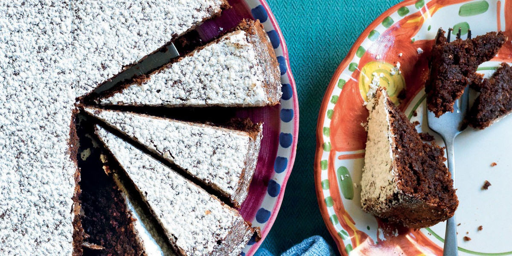

Torta Caprese

Description
Torta Caprese, the famous flourless chocolate and almond cake from the island of Capri, is hard not to love.
A few essential ingredients are all you need: chocolate, almond flour, butter, sugar and eggs.
Ingredients
- 1/3 STICK of unsalted butter, softened
- 1/3 LB. of gluten free dark chocolate, grated
- 1 CUP of gluten free powdered sugar
- 3/4 CUP of almonds, unblanched
- 1 CUP of almond flour
- 1 TSP. of gluten free baking powder
- 4 of large eggs
- 1/2 vanilla bean pod
- Potato starch
- Salt
Steps
- Preheat oven to 350°F.
- Grease a 9” round pie dish with butter and dust with potato starch.
- In a blender, briefly pulse almonds with almond flour.
- Cream softened butter with powdered sugar and a pinch of salt until slightly fluffy.
- Combine egg yolks with butter, blended almonds, grated chocolate, baking powder, and vanilla bean pod seeds.
- Beat the egg whites to stiff peaks and gently fold into the batter.
- Pour the batter into the pie dish and bake for around 45 minutes. Remove and let cool.
- Dust with powdered sugar before serving.